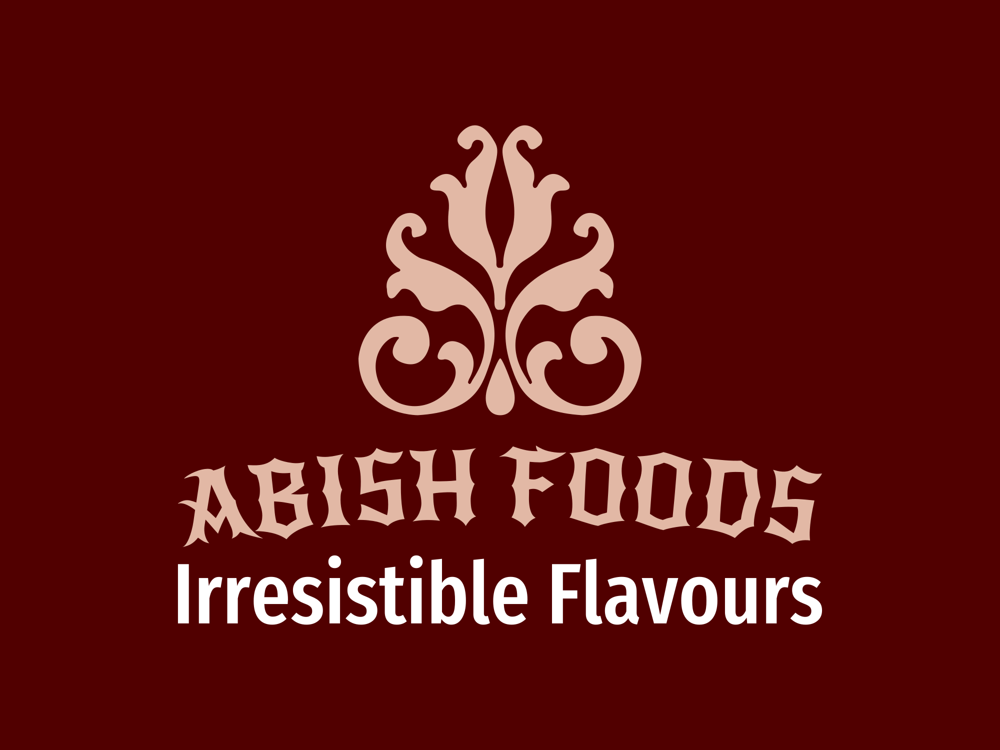
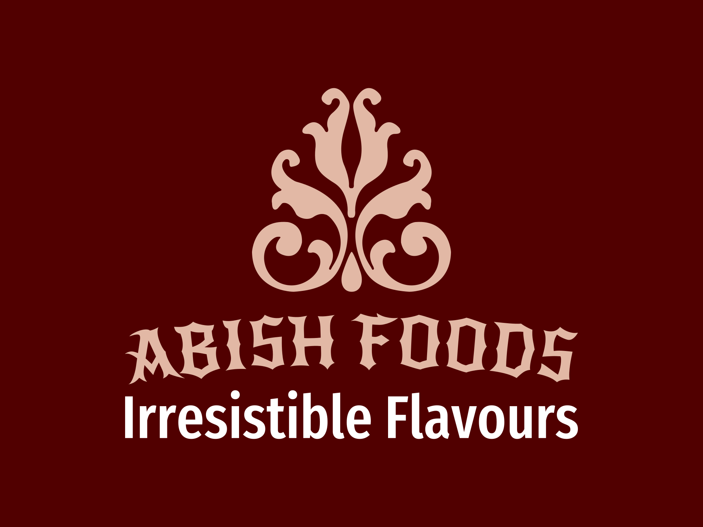
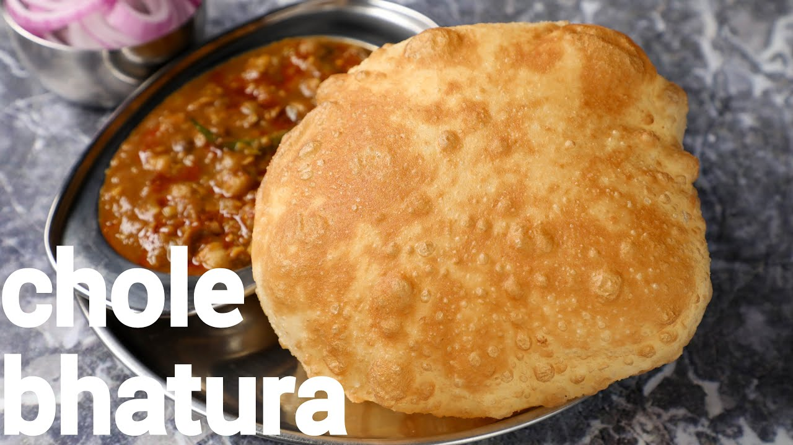

Indian Section


| Butter Chicken | Biryani | Paneer Tikka | Chole Bhature |
| Succulent pieces of chicken cooked in a creamy tomato-based sauce, infused with aromatic spices like garam masala and fenugreek leaves, creating a dish that's rich, indulgent, and utterly irresistible. | Fragrant basmati rice layered with tender marinated meat (such as chicken, lamb, or shrimp), caramelized onions, aromatic spices, and fresh herbs, all slow-cooked together to create a symphony of flavors and aromas that's simply heavenly. | Cubes of soft, marinated paneer (Indian cottage cheese) skewered with colorful bell peppers, onions, and tomatoes, grilled or roasted until charred and smoky, resulting in a mouthwatering vegetarian delight bursting with spicy-sweet flavors. | Spicy, tangy chickpea curry (chole) served alongside fluffy, deep-fried bread (bhature), creating a comforting and indulgent dish that's perfect for satisfying cravings and warming the soul. |
 |
 |
 |
 |